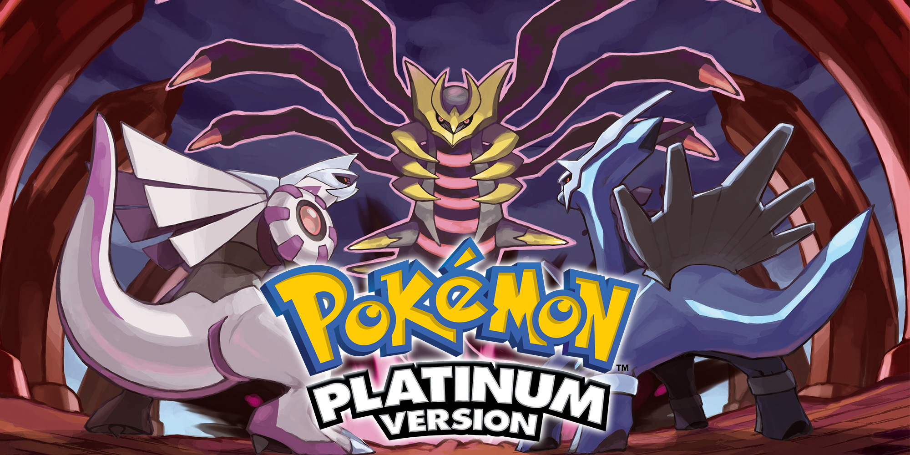
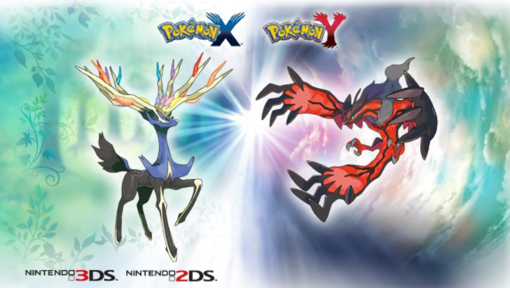

4º Geração
A quarta geração se passa na região de Sinnoh, iniciando a geração de Nintendo DS, dando um salto gráfico significativo em relação a geração anterior, assim como a geração 3, a 4 começou com 2 títulos diamante e pérola com os lendários dialga e palkia respectivamente, e depois uma terceira versão aprimorada, pokémon platinum com o lendário giratina.
Os pokémon iniciais disponíveis são turtwig, piplup e chimchar, com eles o jogador explora a região de Sinnoh, que é inspirada na ilha japonesa Hokkaido, na história dentro do jogo os lugares notáveis da região são os 3 lagos que formam um triângulo no mapa, e no centro o Monte Coronet, onde acontece o conflito final com a equipe maligna da geração.
A equipe maligna da vez é a equipe galáctica, com o líder Cyrus e seus comandantes, Mars, Jupiter, Saturn e Charon, o objetivo deles é criar um novo universo utilizando os poderes de tempo e espaço de dialga e palkia, na reta final o jogador os confronta e captura o lendário da versão.
Alguns dos principais acontecimentos marcantes dessa geração são a introdução do deus pokémon, Arceus, e a luta final contra a campeã da elite 4, Cynthia com seu Garchomp que causa traumas até hoje em alguns jogadores.

5º Geração
A quinta geração se passa na região de Unova, também no Nintendo DS e apesar de estar no mesmo console da geração 4, houve novamente um salto gráfico com os sprites animados dos pokémon nas batalhas, o padrão de 2 versões também foi levemente quebrado, lançado inicialmente com pokémon Black e White com os lendários Zekrom e Reshiram e em vez de uma terceira versão aprimorada, foi lançado uma continuação, pokemon black 2 e white 2, com o terceiro lendário kyurem.
Os pokémon iniciais são snivy oshawott e tepig, uma inovação que não agradou os fãs inicialmente, foi a pokédex de black e white que só tinham os pokémon novos disponíveis, em contrapartida essa foi a geração a introduzir mais pokémon, 156 no total, nas sequências isso foi mudado, dando ao jogador acesso a todos os pokémon das gerações anteriores.
A região é inspirada nos Estados Unidos, com os 2 locais mais marcantes sendo a cidade de Driftveil inspirada no Texas e Castelia em Nova York, os lendários são inspirados no Taoismo com ying e yang, e a equipe maligna é a equipe plasma que tem a temática templária, o líder Ghetsis transforma seu filho adotivo N no rei da equipe e o manipula para atingir seu objetivo de dominar o mundo ao separar as pessoas dos pokémon.
Na continuação após Ghetsis ser derrotado, a equipe plasma retorna 2 anos depois, dessa vez sem máscaras de bons samaritanos, ao invés de usar N, Ghetsis decide usar o pokémon ícone da sequência, Kyurem. Muitos consideram a história de Black e White a melhor da franquia graças ao rival/vilão N.

6º Geração
A sexta geração da franquia foi lançada com os jogos pokémon X e Y para o novo console da Nintendo, o Nintendo 3DS, que como o próprio nome diz, o inovador do console é o 3d, e portanto esses foram os primeiros jogos da franquia principal em 3d, além de não ter uma terceira versão aprimorada, os lendários são Xerneas e Yveltal.
A região é inspirada na França, tanto que um dos monumentos mais notáveis do jogo é a torre prisma, fazendo uma óbvia referência a torre Eiffel, os pokémon iniciais que o jogador pode escolher são chespin, froakie e fennekin, mas de longe a coisa mais marcante da geração foi a nova mecânica de mega evolução, que ao equipar certos pokémon com uma mega pedra correspondente, dava ao jogador a opção de mega evoluir durante a batalha, temporariamente deixando o pokémon mais forte.
A equipe maligna da vez é a equipe flare, e seu líder Lysandre que planeja usar o poder do lendário da versão para extinguir a vida do planeta, deixando apenas algumas pessoas selecionadas para recriar um mundo novo e melhor.
Apesar das novidades gráficas e mecânicas de jogo, pokemon X e Y acabam sendo medianos, pois foi a geração que introduziu menos pokemon, apenas 72 novas criaturas, além de que os recursos dos desenvolvedores provavelmente foram direcionados aos remakes da terceira geração, pois X e Y sofre com falta de conteúdo.
